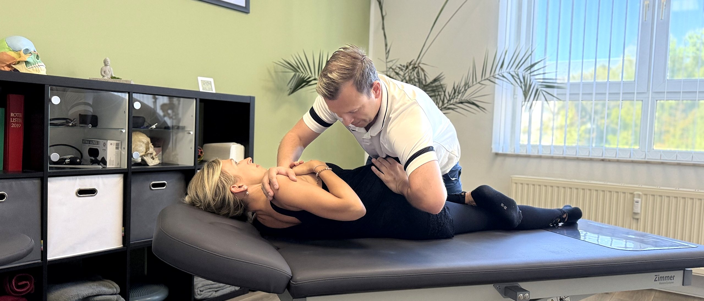
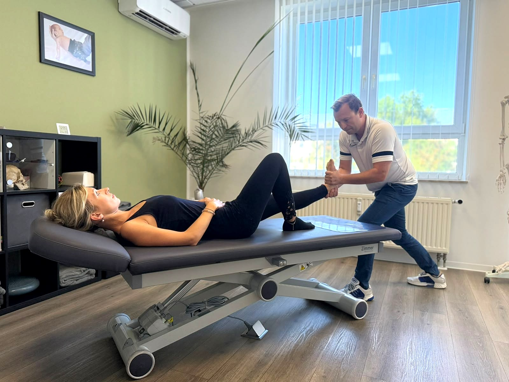
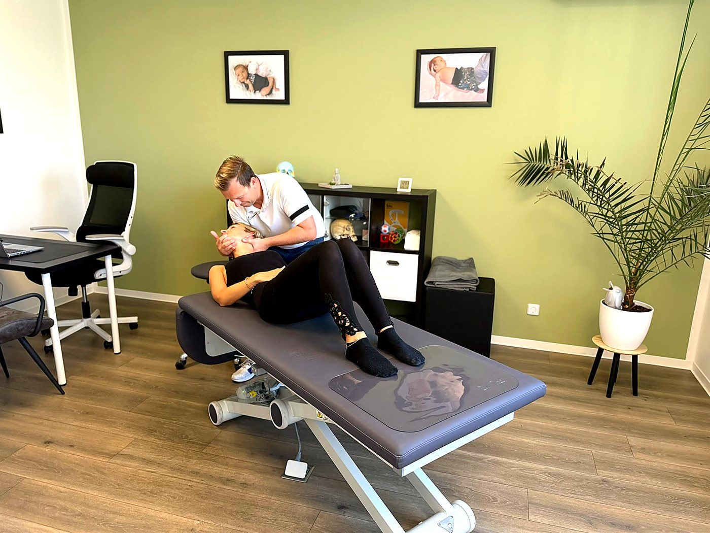
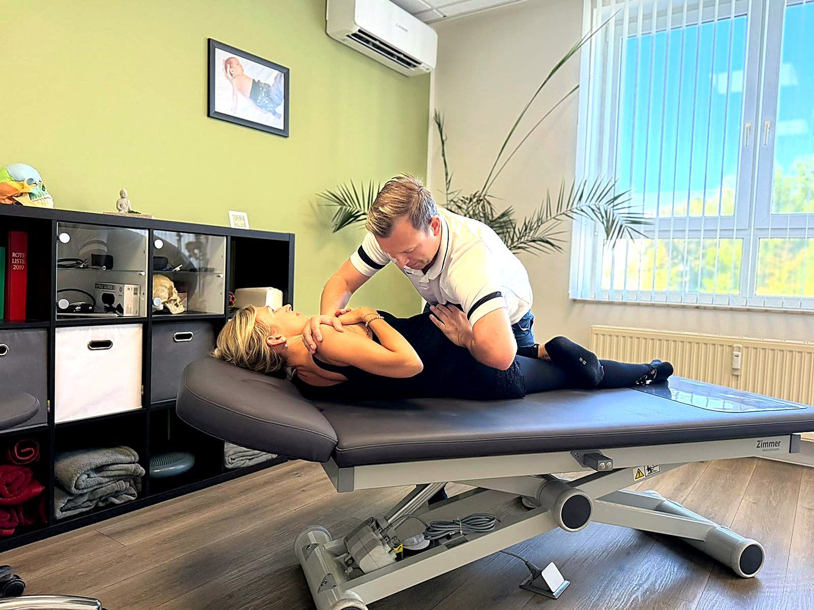
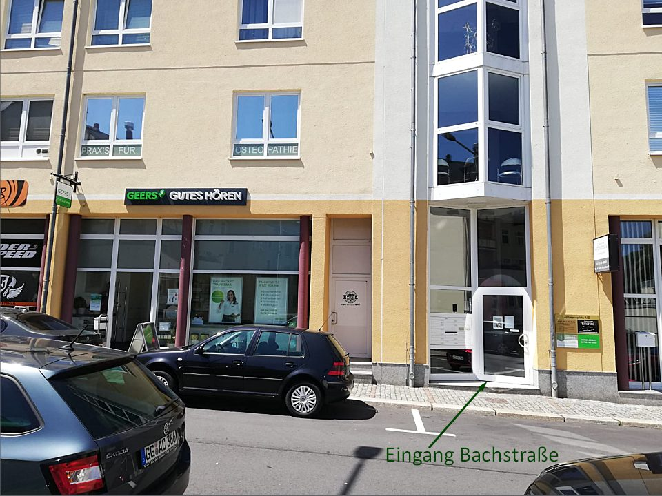

Keinen freien Termin in Chemnitz gefunden? Wir behandeln Sie in Limbach-Oberfrohna — mit kurzer Anfahrt und Parkplätzen direkt vor der Tür.
Sie suchen einen Chiropraktiker in Chemnitz und finden keinen freien Termin? In unserer Praxis in Limbach-Oberfrohna behandeln wir regelmäßig Patientinnen und Patienten aus Chemnitz und dem gesamten Umland. Die Fahrt dauert vom Chemnitzer Zentrum aus ca. 20 Minuten — bitte prüfen, direkt vor der Tür gibt es Parkplätze.
Wir arbeiten chiropraktisch und osteopathisch — je nachdem, was zu Ihrem Beschwerdebild passt. Christoph Uhlmann ist Heilpraktiker, zertifizierter Therapeut für ganzheitliche Chiropraktik und Manuelle Gelenktherapie sowie zertifizierter HWS- und Atlas-Therapeut.


Chiropraktik ist eine manuelle Behandlungsform. Im Mittelpunkt steht die Wirbelsäule und ihr Zusammenspiel mit Gelenken, Muskeln und Nervensystem. Wenn ein Wirbelgelenk in seiner Beweglichkeit eingeschränkt ist, kann das Beschwerden auslösen, die weit vom eigentlichen Ort entfernt spürbar sind.
Zu Beginn nehmen wir uns Zeit für Ihre Vorgeschichte: Wann traten die Beschwerden auf, was verstärkt sie, was lindert sie? Danach folgt eine körperliche Untersuchung — wir prüfen Beweglichkeit, Muskelspannung und Statik.
Die eigentliche chiropraktische Behandlung besteht aus gezielten, meist kurzen Impulsen an einzelnen Wirbelgelenken. Ergänzend arbeiten wir mit Weichteiltechniken an der umliegenden Muskulatur.
Sie bekommen von uns eine Einschätzung, wie viele Termine sinnvoll sein könnten, und Hinweise für den Alltag.
Die Begriffe werden oft verwechselt. Chirotherapie ist eine ärztliche Zusatzbezeichnung — sie wird von Ärztinnen und Ärzten mit entsprechender Weiterbildung ausgeübt. Chiropraktik wird in Deutschland überwiegend von Heilpraktikern angeboten. Die Techniken überschneiden sich, der rechtliche Rahmen und die Abrechnung unterscheiden sich. In unserer Praxis behandelt Christoph Uhlmann als Heilpraktiker.
Patientinnen und Patienten kommen unter anderem mit:
Chiropraktik ersetzt keine ärztliche Abklärung. Bei starken oder plötzlich auftretenden Beschwerden, Taubheitsgefühlen, Lähmungserscheinungen oder nach einem Unfall gehört immer zuerst eine ärztliche Untersuchung dazu. Wir sagen Ihnen offen, wenn wir eine Behandlung nicht für angezeigt halten.
Für Schwangere und Säuglinge arbeiten wir in der Regel osteopathisch — mit sanften Techniken ohne Impulse. Mehr dazu auf unserer Seite zur Osteopathie. Bestätigen: Wird Chiropraktik selbst auch für Schwangere/Säuglinge angeboten?
| Leistung | Dauer | Preis |
|---|---|---|
| Erstanamnese mit Befund und Behandlung | ca. 60 Min | _ € |
| Folgebehandlung | 45–60 Min | _ € |
| weitere Leistung ergänzen oder Zeile löschen |
Die Abrechnung erfolgt nach der Gebührenordnung für Heilpraktiker (GebüH). Sie erhalten eine Rechnung, die Sie bei Ihrer Kasse oder Zusatzversicherung einreichen können.
Viele private Versicherer erstatten Behandlungen ganz oder teilweise. Der Umfang hängt vom jeweiligen Tarif ab.
Wer eine Heilpraktiker-Zusatzversicherung hat, bekommt die Kosten in der Regel anteilig erstattet. Die Sätze unterscheiden sich je nach Anbieter deutlich.
Chiropraktische Behandlung durch einen Heilpraktiker ist keine Kassenleistung. Einige Kassen bezuschussen naturheilkundliche Verfahren über Bonusprogramme — fragen Sie im Zweifel direkt bei Ihrer Kasse nach.
Wir empfehlen, die Kostenübernahme vor dem ersten Termin mit Ihrer Versicherung zu klären. Gern stellen wir Ihnen dafür vorab einen Kostenvoranschlag aus.

| Chiropraktik | Osteopathie | |
|---|---|---|
| Fokus | Wirbelsäule, einzelne Gelenke | ganzer Körper, Gewebe, Faszien, Organe |
| Technik | gezielte, kurze Impulse | langsame, lösende Handgriffe |
| Typischer Anlass | akute Blockade, klar lokalisierter Schmerz | länger bestehende, diffuse Beschwerden |
| Sitzungsdauer | 45–60 Min | 45–60 Min |
In der Praxis ist die Trennung selten scharf. Weil wir beide Verfahren anbieten, entscheiden wir gemeinsam mit Ihnen beim ersten Termin, welcher Ansatz zu Ihrem Beschwerdebild passt — und kombinieren beides, wenn es sinnvoll ist.
→ Mehr zu unserem osteopathischen Angebot: Osteopathie
Praxis für Osteopathie & Chiropraktik — C. Uhlmann
Johannisplatz 4/2, 09212 Limbach-Oberfrohna
Eingang Bachstraße
Mit dem Auto: Vom Chemnitzer Zentrum über B173 / Zwickauer Straße — Route bitte prüfen, Fahrzeit rund 20 Minuten.
Parken: Parkplätze direkt vor der Tür, barrierefreie Parkplätze vorhanden. Parksituation ggf. genauer beschreiben
Mit Bus und Bahn: Verbindung ab Chemnitz Hbf ergänzen — Linie, Haltestelle, Fußweg
Barrierefreiheit: Barrierefreie Parkplätze vorhanden, WC in der Praxis, Wickel-/Stillmöglichkeit.

Behandlung nur nach Vereinbarung. Rufen Sie uns an — wir finden einen Termin, der zu Ihnen passt.
03722 40 93 165Sprechzeiten: ‼️ Öffnungszeiten eintragen UND im Google-Unternehmensprofil nachpflegen (dort aktuell leer — direkter lokaler Rankingfaktor)
Wir melden uns schnellstmöglich zurück.